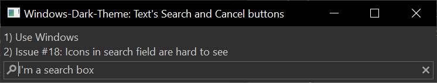

Here are descriptions of some of the changes of interest to plug-in developers made to the Eclipse Platform and SWT for the 4.24 release of Eclipse.
New features oriented towards end-users of the platform can be viewed in the What's New section of the Workbench User Guide.
Platform Changes |
|
| ILog can now be acquired as a service |
The ILog can now be acquired as service, so no need to have a Plugin activator or call Platform.getLog(...) anymore if you are in a Dependency Injection Context:
Example with E4: @Inject ILog log;
Example with Declarative Services: @Reference ILog log;
Of course any other way to acquire a Service ( |
| New EclipseContextFactory .getServiceContext(Class<?>) method |
There is now a new |
SWT Changes |
|
| Improved Text's search/cancel buttons in Windows dark theme |
The Windows Text widget now supports improved search and cancel buttons in the dark theme:

On Windows 10, all the dark theme tweaks including the dark text's search and cancel buttons can be disabled using the
-Dorg.eclipse.swt.internal.win32.disableCustomThemeTweaks=true |